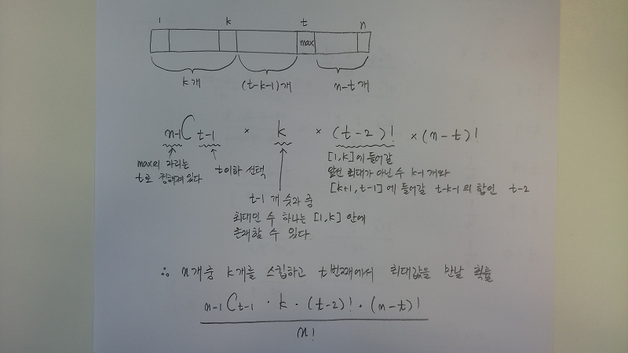
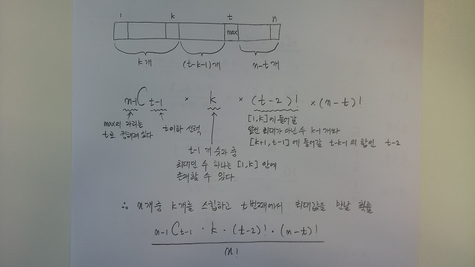

스킵 그리고 결정, 다시 생각해 보니.
2/17/2016
예전에 엘리베이터를 타고 10층 건물을 올라가면서 구혼자를 선택하는 문제에 대해 글을 쓴 적이 있다. 그런데 답이 2차 방정식으로 너무 깔끔하게 나온 것이 내 인생이 이렇게 쉬울 리가 없어 이상하다 생각이 들어 계속 찜찜했었다. 그래서 다시 곰곰히 되돌려 생각해 보니, 아니나다를까 아뿔싸 멍청하게 생각한 부분을 찾고 말았다. 원문은 아래와 같다.
----
휴일 학교 운동장을 빌려 벼룩시장이 열렸다. 누구의 창고나 구석에 처박혀 있던 물건들이 햇빛으로 뿌연 몸을 씻으며 열을 지어 꼿꼿이 줄 서 있었다. 도로를 따라 이런 저런 물건들을 보며 지나가다 오래 전 책에서 대충 보고 지나갔던 엘리베이터 문제가 떠올랐다.
문제의 내용은 이러하다.
예를 들어
인 경우
1회 통과 후 비교 선택하는 전략인 경우 첫 번째 23이후 두 번째 57이 23보다 크므로 57을 선택한다.
2회 통과 후 비교 선택의 경우 23, 57을 보내고 기준점을 57로 설정한 후 비교를 시작한다 31은 57보다 작으므로 지나치고 그 다음 80은 57보다 크므로 선택한다.
3회 통과 후 비교 선택의 경우 23, 57, 31을 보내고 기준점을 57로 선택한다. 이 경우도 80이 선택된다.
결국 경험을 많이 쌓을 수록 - 통과를 많이 시킬수록 좋은 선택을 할 가능성이 높아지나 남아있는 선택지가 줄어들기 때문에 인생의 오묘함의 한 단면을 엿볼 수 있다.
감상은 그만두고 正傳으로 돌아와 어떻게 최선의 선택을 할 수 있을지 생각해보자.
문제를 단순화 하기 위해 1점부터 10점까지 매력도가 있다고 가정하자.
* 1회 통과 경험 기반의 선택 시 최선의 선택을 하기 위해서는 첫 번째에 9점이 나와야 한다. 이 경우 기준점 보다 높은 경우를 찾아 멈추면 최고점인 10점을 선택하게 된다. 따라서 확률은 \( \frac{1}{10} \)
* 2회 통과 후 10점을 선택하기 위해서는 1, 2회 중 9가 나오고 10은 나오지 않아야 한다. 따라서 \( \frac{1}{10} \times \frac{8}{9} \times 2 \)
* 3회 통과 후 10점을 선택하기 위해서는 1, 2, 3회 중 9가 나오고 10은 나오지 않아야 한다. 따라서 \( \frac{1}{10} \times \frac{8}{9} \times \frac{7}{8} \times 3 \)
\( \ldots \)
* k회 통과 후 10점을 선택하기 위한 확률은
\( \frac{1}{10} \times \frac{8}{9} \times \frac{7}{8} ... \frac{10-k}{10-k+1} \times k \)
\( = \frac{(10-k) \times k}{10 \times 9} \)
\( = \frac{1}{90}(-k^{2}+10k) \)
\( = -\frac{1}{90}(k-5)^{2} + \frac{25}{90} \)
따라서 5번을 통과한 후 그때까지의 최대값 보다 더 큰 값을 만나면 선택하는 것이 최선이다.
일반화하면 원 데이터 분포에 대한 정보가 없고 최대 \( N \) 번 선택할 수 있을 때 \( [\frac{N}{2}] \) 의 경험을 쌓고나서 그때까지의 최대값과 비교하는 것이 최선의 선택을 할 가능성이 가장 높다 고 할 수 있겠다.
였는데, 여기서 잘못 생각한 부분은 10점을 선택하기 위해 통과시켜 보내는 시행 중에 굳이 9가 나오지 않아도 된다는 점에 있다. 예를 들어 3개 층을 통과한 후 결정한다고 하자. 이때 1,3,5 가 나온 후 2, 10 의 차례로 나와도 10을 선택할 수 있기 때문이다.
정확한 조건은 통과시키는 구간의 최대값이 이후 구간의 최대값보다 크다 가 되겠다.
도식화 하면

전체 n 번 중에 1부터 k 번을 통과시킨다고 하자 그리고 t 번째에 최대값이 있을 때 이를 선택하기 위한 조건은 다음과 같다.
t 번째에 최대값이 들어가니까 앞쪽에 t-1 개를 배열하고 뒷쪽에 n-t 개를 배열하게 된다.
그런데 앞쪽 t-1 개는 통과하는 구간 즉 [1,k] 구간과 [k+1, t-1] 구간으로 나뉘는데, 그 안에 들어가는 수 중 최대값은 [1,k] 구간에 존재하여야 한다.
이 경우의 수는 먼저 n-1 개 중에 t-1 개를 뽑고 \( _{n-1} C_{t-1} \), 그 중 하나 최대값은 [1, k] 안에 있으므로 \( k \) 가지 경우가 있으며,
이제 남은 t-2 개를 배치하는 방법은 \( (t-2)! \) 이다.
여기까지 t 개의 수를 배치하였으므로 남은 n-t 개는 아무렇게나 배치할 수 있다 따라서 경우의 수는 \( (n-t)! \) 가 된다.
정리하자면 전체 n 개의 수 중에서 k 개를 통과한 후 t 번째에서 최대값을 발견할 확률은
\( \frac{ _{n-1} C_{t-1} k (t-2)! (n-t)! }{n!} \)
이 된다. 더럽게 복잡해 보이지만 풀어보면
\( \frac{ (n-1)! }{ (t-1)!(n-t)!} \frac{ k(t-2)!(n-t)!}{n!} \)
\( = \frac {1}{n} \frac{1}{t-1} k \)
\( = \frac {k}{n} \frac{1}{t-1} \)
이 되고 따라서 t 가 k+1 부터 n 까지 존재할 수 있으므로 전체 n 개 에서 k 번을 통과한 후 최대값을 선택할 수 있을 전체 확률은
\( \sum_{t=k+1} ^{n} \frac{k}{n} \frac{1}{t-1} \)
\( = \frac{k}{n} \sum_{i=k} ^{n-1} \frac{1}{i} \)
가 된다. 오오 또 조화수열. 이 세상은 사실 조화수열이 지배하는 것인가.
----
휴일 학교 운동장을 빌려 벼룩시장이 열렸다. 누구의 창고나 구석에 처박혀 있던 물건들이 햇빛으로 뿌연 몸을 씻으며 열을 지어 꼿꼿이 줄 서 있었다. 도로를 따라 이런 저런 물건들을 보며 지나가다 오래 전 책에서 대충 보고 지나갔던 엘리베이터 문제가 떠올랐다.
문제의 내용은 이러하다.
10명의 구혼자가 10층 건물의 각 층에 당신을 기다리고 있다. 이제 1층부터 엘리베이터를 타고 10층까지 올라가는데, 엘리베이터 문이 열리고 닫히는 동안 선택할 수 있다. 끝까지 선택하지 않은 경우 마지막 층 구혼자가 선택된다. 이때 최선의 선택 방법은 무엇인가?일단 가정이 있다.
- 모든 구혼자는 수치화 할 수 있는 매력도 라는 것이 존재한다.
- 매력도 수치는 엘리베이터 문이 열리고 닫히는 동안 확인 할 수 있다.
- 최선의 선택이란 매력도가 가장 큰 구혼자를 선택하는 것으로 정의한다.
앞서 지나쳐온 구혼자들의 최대 매력도보다 더 큰 매력도를 가진 구혼자를 만나면 선택하는 전략이 의미를 가진다.
예를 들어
| 층 | 1 | 2 | 3 | 4 | 5 | 6 | 7 | 8 | 9 | 10 |
|---|---|---|---|---|---|---|---|---|---|---|
| 매력도 | 23 | 57 | 31 | 80 | 75 | 16 | 43 | 99 | 66 | 48 |
1회 통과 후 비교 선택하는 전략인 경우 첫 번째 23이후 두 번째 57이 23보다 크므로 57을 선택한다.
2회 통과 후 비교 선택의 경우 23, 57을 보내고 기준점을 57로 설정한 후 비교를 시작한다 31은 57보다 작으므로 지나치고 그 다음 80은 57보다 크므로 선택한다.
3회 통과 후 비교 선택의 경우 23, 57, 31을 보내고 기준점을 57로 선택한다. 이 경우도 80이 선택된다.
결국 경험을 많이 쌓을 수록 - 통과를 많이 시킬수록 좋은 선택을 할 가능성이 높아지나 남아있는 선택지가 줄어들기 때문에 인생의 오묘함의 한 단면을 엿볼 수 있다.
감상은 그만두고 正傳으로 돌아와 어떻게 최선의 선택을 할 수 있을지 생각해보자.
문제를 단순화 하기 위해 1점부터 10점까지 매력도가 있다고 가정하자.
* 1회 통과 경험 기반의 선택 시 최선의 선택을 하기 위해서는 첫 번째에 9점이 나와야 한다. 이 경우 기준점 보다 높은 경우를 찾아 멈추면 최고점인 10점을 선택하게 된다. 따라서 확률은 \( \frac{1}{10} \)
* 2회 통과 후 10점을 선택하기 위해서는 1, 2회 중 9가 나오고 10은 나오지 않아야 한다. 따라서 \( \frac{1}{10} \times \frac{8}{9} \times 2 \)
* 3회 통과 후 10점을 선택하기 위해서는 1, 2, 3회 중 9가 나오고 10은 나오지 않아야 한다. 따라서 \( \frac{1}{10} \times \frac{8}{9} \times \frac{7}{8} \times 3 \)
\( \ldots \)
* k회 통과 후 10점을 선택하기 위한 확률은
\( \frac{1}{10} \times \frac{8}{9} \times \frac{7}{8} ... \frac{10-k}{10-k+1} \times k \)
\( = \frac{(10-k) \times k}{10 \times 9} \)
\( = \frac{1}{90}(-k^{2}+10k) \)
\( = -\frac{1}{90}(k-5)^{2} + \frac{25}{90} \)
따라서 5번을 통과한 후 그때까지의 최대값 보다 더 큰 값을 만나면 선택하는 것이 최선이다.
일반화하면 원 데이터 분포에 대한 정보가 없고 최대 \( N \) 번 선택할 수 있을 때 \( [\frac{N}{2}] \) 의 경험을 쌓고나서 그때까지의 최대값과 비교하는 것이 최선의 선택을 할 가능성이 가장 높다 고 할 수 있겠다.
였는데, 여기서 잘못 생각한 부분은 10점을 선택하기 위해 통과시켜 보내는 시행 중에 굳이 9가 나오지 않아도 된다는 점에 있다. 예를 들어 3개 층을 통과한 후 결정한다고 하자. 이때 1,3,5 가 나온 후 2, 10 의 차례로 나와도 10을 선택할 수 있기 때문이다.
정확한 조건은 통과시키는 구간의 최대값이 이후 구간의 최대값보다 크다 가 되겠다.
도식화 하면

전체 n 번 중에 1부터 k 번을 통과시킨다고 하자 그리고 t 번째에 최대값이 있을 때 이를 선택하기 위한 조건은 다음과 같다.
t 번째에 최대값이 들어가니까 앞쪽에 t-1 개를 배열하고 뒷쪽에 n-t 개를 배열하게 된다.
그런데 앞쪽 t-1 개는 통과하는 구간 즉 [1,k] 구간과 [k+1, t-1] 구간으로 나뉘는데, 그 안에 들어가는 수 중 최대값은 [1,k] 구간에 존재하여야 한다.
이 경우의 수는 먼저 n-1 개 중에 t-1 개를 뽑고 \( _{n-1} C_{t-1} \), 그 중 하나 최대값은 [1, k] 안에 있으므로 \( k \) 가지 경우가 있으며,
이제 남은 t-2 개를 배치하는 방법은 \( (t-2)! \) 이다.
여기까지 t 개의 수를 배치하였으므로 남은 n-t 개는 아무렇게나 배치할 수 있다 따라서 경우의 수는 \( (n-t)! \) 가 된다.
정리하자면 전체 n 개의 수 중에서 k 개를 통과한 후 t 번째에서 최대값을 발견할 확률은
\( \frac{ _{n-1} C_{t-1} k (t-2)! (n-t)! }{n!} \)
이 된다. 더럽게 복잡해 보이지만 풀어보면
\( \frac{ (n-1)! }{ (t-1)!(n-t)!} \frac{ k(t-2)!(n-t)!}{n!} \)
\( = \frac {1}{n} \frac{1}{t-1} k \)
\( = \frac {k}{n} \frac{1}{t-1} \)
이 되고 따라서 t 가 k+1 부터 n 까지 존재할 수 있으므로 전체 n 개 에서 k 번을 통과한 후 최대값을 선택할 수 있을 전체 확률은
\( \sum_{t=k+1} ^{n} \frac{k}{n} \frac{1}{t-1} \)
\( = \frac{k}{n} \sum_{i=k} ^{n-1} \frac{1}{i} \)
가 된다. 오오 또 조화수열. 이 세상은 사실 조화수열이 지배하는 것인가.
실제 데이터 값을 계산해 볼 수 있는 코드는 다음과 같다.
#!/usr/bin/perl
use strict;
use warnings;
sub combination;
sub permutation;
sub factorial;
sub ratio;
my $n = 10;
my $max_ratio = 0;
my $max_k = 0;
foreach my $k ((1..$n-1)){
my $ratio = ratio($n, $k);
if($max_ratio < $ratio){
$max_ratio = $ratio;
$max_k = $k
}
}
printf "when k is %d, max ratio: %.4f\n"
, $max_k, $max_ratio;
sub ratio{
my ($n, $k) = @_;
my $sum = 0;
foreach my $t (($k+1)..$n){
my $current = combination($n-1, $t-1)
*$k*factorial($t-2)
*factorial($n-$t)
/permutation($n);
$sum += $current;
}
return $sum;
}
sub combination{
my ($n, $k) = @_;
return permutation($n, $k)/factorial($k);
}
sub permutation{
my ($n, $k) = @_;
$k = $n unless(defined($k));
my $result = 1;
while($k > 0){
$result *= $n;
$k --;
$n --;
}
return $result;
}
sub factorial{
my ($n) = @_;
my $result = 1;
while($n>1){
$result *= $n;
$n --;
}
return $result;
}
결과는
$ perl action.pl when k is 3, max ratio: 0.3987
이며 3층까지 지나친 후 배우자를 선택하는 것이 최적이다 는 결론을 얻게 된다.